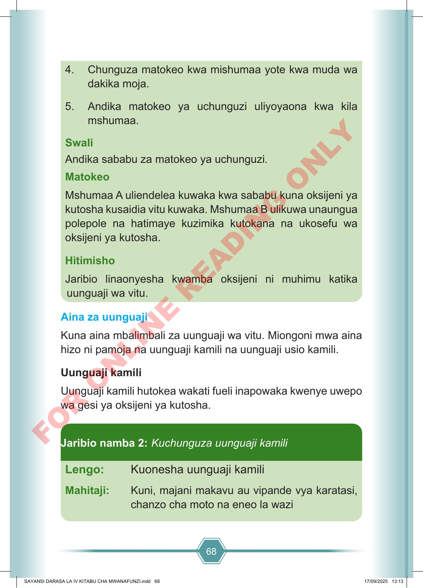

68 4. Chunguza matokeo kwa mishumaa yote kwa muda wa dakika moja. 5. Andika matokeo ya uchunguzi uliyoyaona kwa kila mshumaa. Swali Andika sababu za matokeo ya uchunguzi. Matokeo Mshumaa A uliendelea kuwaka kwa sababu kuna oksijeni ya kutosha kusaidia vitu kuwaka. Mshumaa B ulikuwa unaungua polepole na hatimaye kuzimika kutokana na ukosefu wa oksijeni ya kutosha. Hitimisho Jaribio linaonyesha kwamba oksijeni ni muhimu katika uunguaji wa vitu. Aina za uunguaji Kuna aina mbalimbali za uunguaji wa vitu. Miongoni mwa aina hizo ni pamoja na uunguaji kamili na uunguaji usio kamili. Uunguaji kamili Uunguaji kamili hutokea wakati fueli inapowaka kwenye uwepo wa gesi ya oksijeni ya kutosha. Lengo: Kuonesha uunguaji kamili Mahitaji: Kuni, majani makavu au vipande vya karatasi, chanzo cha moto na eneo la wazi Jaribio namba 2: Kuchunguza uunguaji kamili SAYANSI DARASA LA IV KITABU CHA MWANAFUNZI.indd 68 SAYANSI DARASA LA IV KITABU CHA MWANAFUNZI.indd 68 17/09/2025 13:13 17/09/2025 13:13 F O R O N L I N E R E A D I N G O N L Y